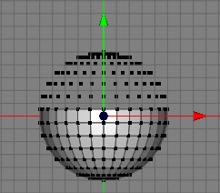
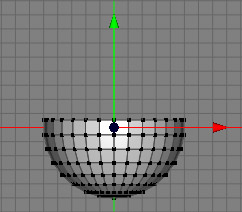

Optimize Tool
The purpose of the optimize tool is to remove unused points. For example, when you delete a polygon only, the polygon face will be removed but not the points which built the polygon. To remove all unused points with one simple click, use this tool. See the images below for a better understanding.
 
Modes
This tool works only on raw polygon objects.


The optimize tool is a headless tool which means that it doesn't show up in the tool view. To use it you just have to select the raw polygon object from which you want to remove unused points and call the menu command "Tools PolygonOptimize". Now all unused points of the polygon object should have disappeared.
PolygonOptimize". Now all unused points of the polygon object should have disappeared.
Keys
- none
Properties
- none